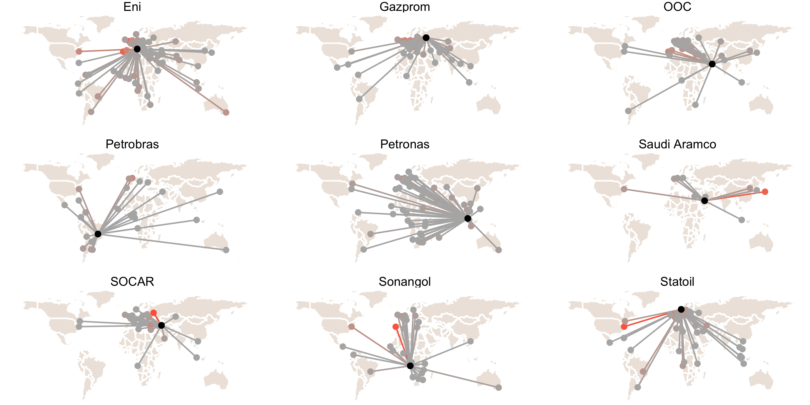

National Oil Companies as International Investors
David J. Tingle
Abstract
“This is an Abstract.”
Overview
National Oil Companies (NOCs) were initially built to give states control over their domestic hydrocarbon resources, but many of them have now acquired assets and established subsidiaries outside of their home state. This dissertation adresses three key questions related to this phenomenon.
- First, how does NOC internationalization vary?
- Second, why are some NOCs highly internationalized and others aren’t?
- Third, what are the political consequences of NOC internationalization?
In addressing these questions, this research sheds light on a set of integral but under-theorized institutions, NOCs, which are at the centre of contemporary state capitalism and the political economy of hydrocarbon resource wealth.
